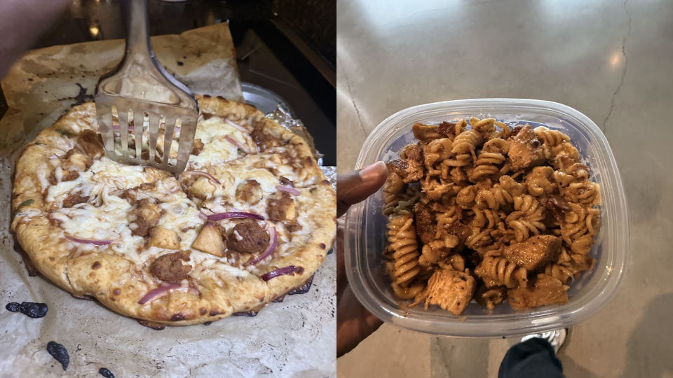
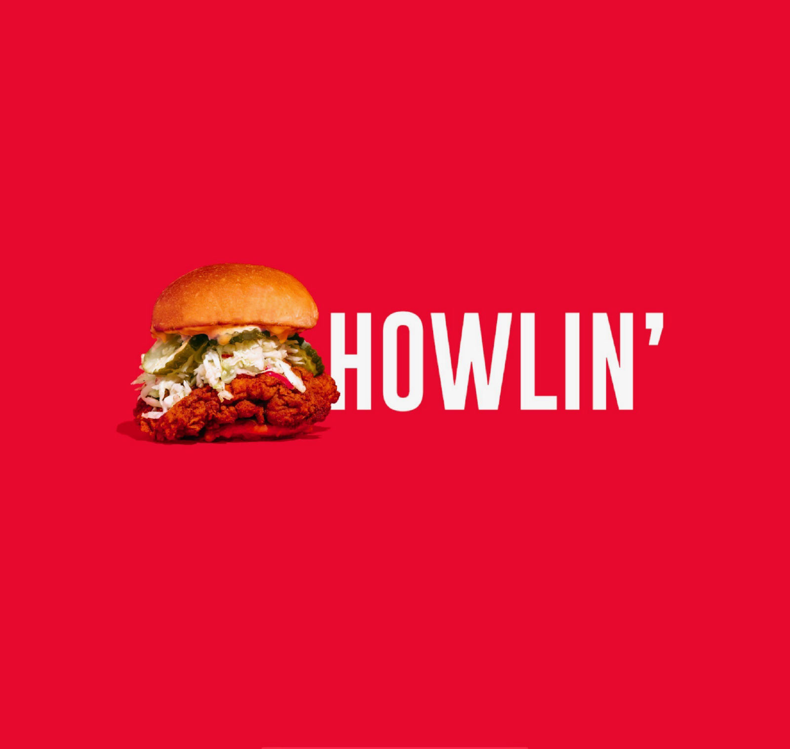

Hobbies
Playing Video Games
Ever since I started using my older brother’s PS4 back in 2015, I have had a huge love for video games, especially single-player, story driven experiences. My favorite game of all time is Elden Ring, with Red Dead Redemption and Ghost of Tsushima coming in a close second. Currently, I am awaiting GTA 6.
Learning How to Cook

This is a developing interest of mine, and I only started cooking over the course of this summer. Since then I have been slowly learning new recipes and improving. Both my mom and my sister are avid cooks, so the appeal has always been there. So far I have made chicken bacon ranch pasta, as well as homemade BBQ chicken pizza (from the dough and everything!).
Trying New Foods

I have always loved going out to try brand new foods, and when I am somewhere different it is one of the first things I want to do. I can admit I have basic taste though, since my favorite food is fried chicken, and the best chicken I have ever had was from Howlin’ Ray’s Hot Chicken in Los Angeles.